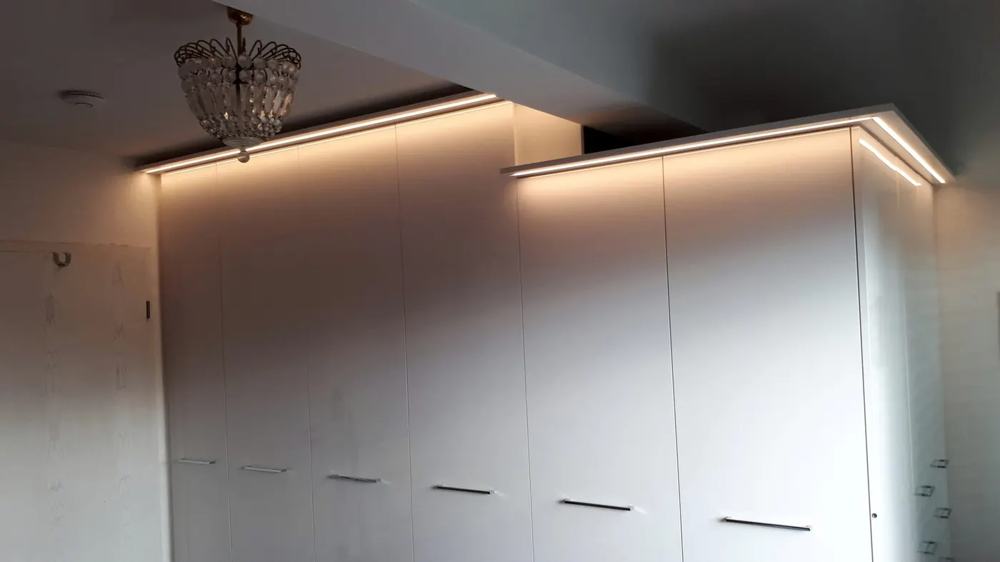
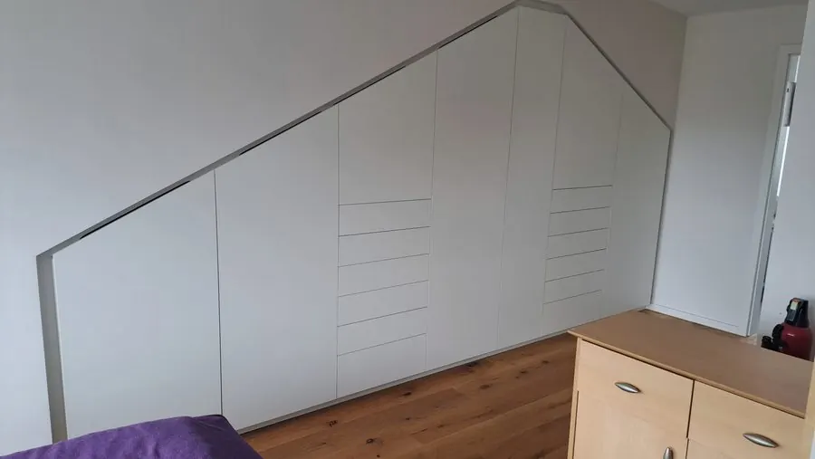
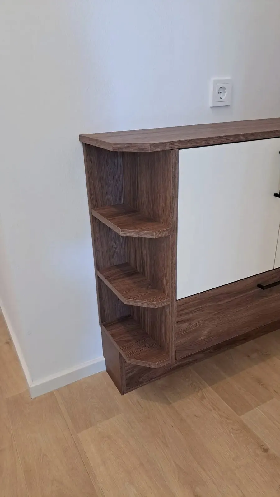

Sieben Wege, einen Raum zu nutzen.Leistungen · Germering
Vom Einbauschrank unter der Dachschräge bis zum Tisch aus einem Baumstamm — alles aus der eigenen Werkstatt, alles nach Maß.
Übersicht
Was ich baue.
Sieben Wege, aus dem Platz, den Sie haben, den Platz zu machen, den Sie brauchen. Lösungen gibt es auch dort, wo andere an ihre Grenzen stoßen.

Einbauschränke
Raumhoch, passgenau, auch unter der Schräge Ansehen
Küchen
Geplant um den Raum, nicht um den Katalog Ansehen
Stauraum & Treppe
Unter der Treppe, im Kniestock, hinter der Tür Ansehen
Garderoben
Jacken, Schuhe, Sitzbank — alles an seinem Platz Ansehen
Sideboards & Wohnwände
TV-Wand, Sideboard, Klappen mit Technik dahinter Ansehen
Badmöbel
Feuchtraumtauglich, mit Licht und Siphonschublade Ansehen
Sonderanfertigungen
In bald zwei Jahrzehnten macht man doch so einiges als Schreiner. Da baut man auch mal ein Wasserrad aus Eiche mit vier Metern Durchmesser oder ein Massivholzbett aus Olivenholz.
AnsehenWohin damit
Vier Stellen, an denen Ihre Wohnung Platz versteckt.
Meistens fängt es mit derselben Frage an: Wohin mit all dem Zeug? Die Antwort steht fast immer schon im Raum — sie ist nur noch nicht ausgebaut.




Gemeinsam
Was Sie von mir bekommen.
- Kundenindividuelle Beratung vor Ort — ich komme zu Ihnen, nicht Sie in ein Studio.
- Termingerechte Umsetzung des Projekts.
- Umfangreiche Materialauswahl für jeden Geschmack.
- Individuelle Lösungen — auch in schwierigen Ecken planbar und lösbar.
- Passgenaue Einbauten, die der gegebenen Raumsituation entsprechen.
- Als Schreiner vor Ort jederzeit erreichbar — und auch zur Stelle, wenn's brennt.
Anfrage
Welcher Raum macht Ihnen gerade Sorgen?
Ein Foto und ein paar Maße genügen für den Anfang. Alles Weitere klären wir beim Aufmaß vor Ort.
82110 Germering
Wer in der Werkstatt steht, geht nicht immer ans Telefon — eine Nachricht genügt.